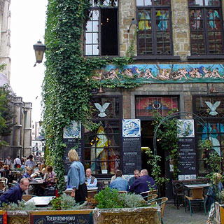

Het Elfde Gebod

Torfbrug 10, Antwerp, 2000, Belgium 03 289 34 66 http://www.kathedraalcafe.be/ 51.22074, 4.40146
Good food and beer right next to the cathedral
There are so many cafes and restaurants in the tourist-centre of Antwerp, between Groenplaats and Grote Markt that it is hard to imagine that any of them are any good; Het Elfde Gebod (whose web site suggests that it has been renamed to KathedraalCafe) is one of the good ones. It is a fairly large cafe with a traditional interior, a nice big terrace, and a decent selection of food and beer. None of these things are really special, but they are certainly above-average.
The main peculiarity is the enormous collection of statuettes of angels that line the interior walls, which certainly add to the atmosphere.
The best ways to enjoy this cafe are out on the terrace for lunch on a sunny day, with a large lunch and a beer, or for a relaxed evening with a large number of beers and something to eat.